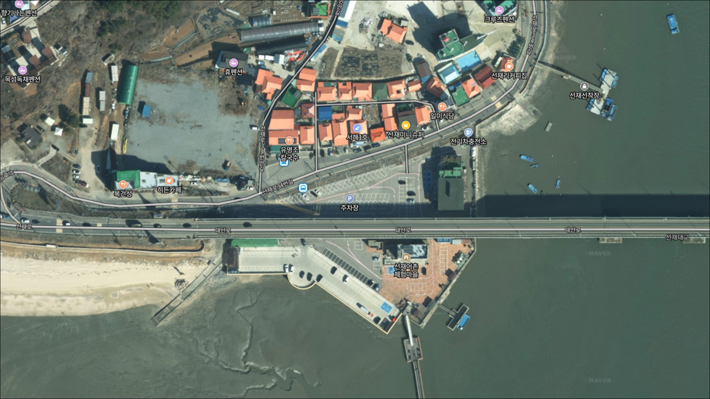
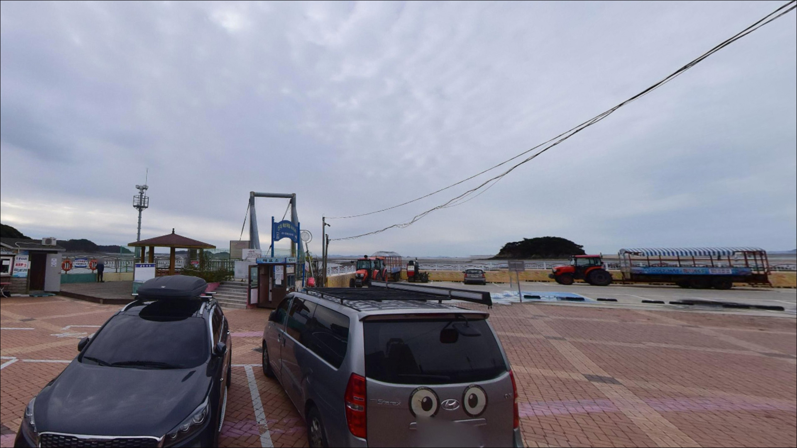
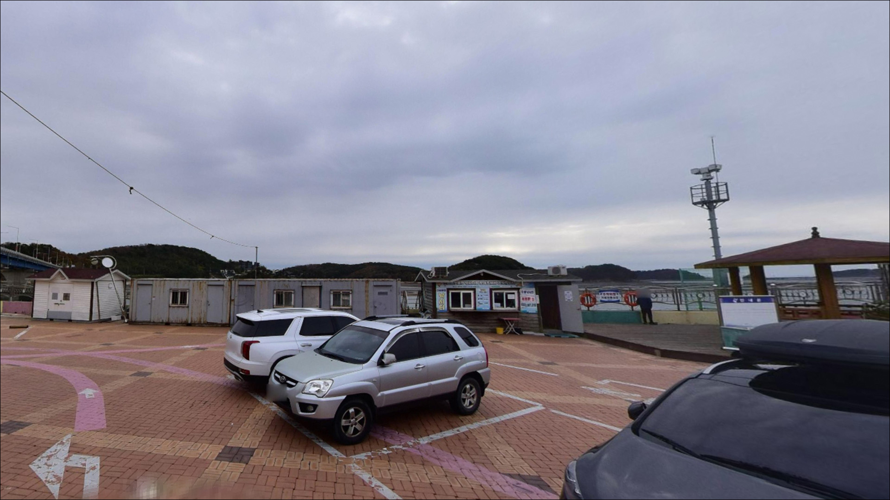
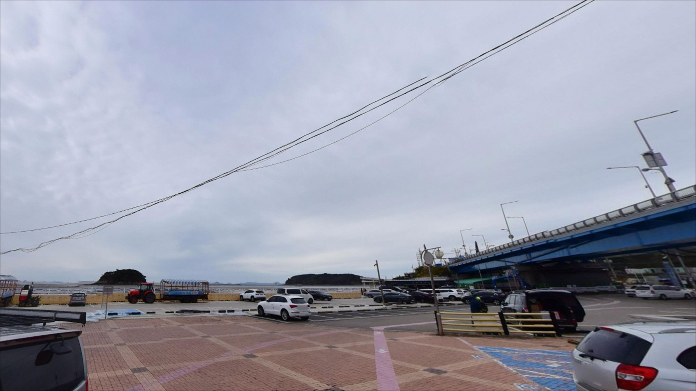
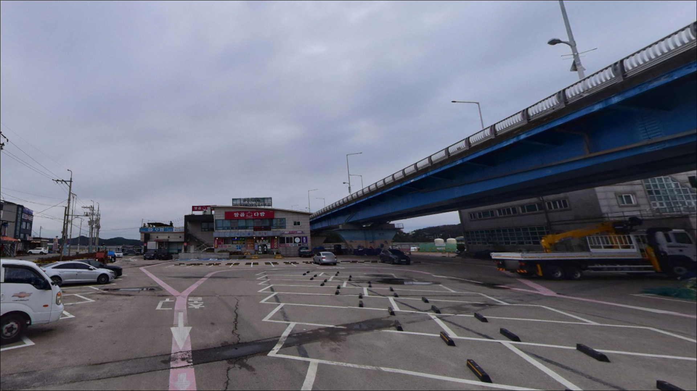
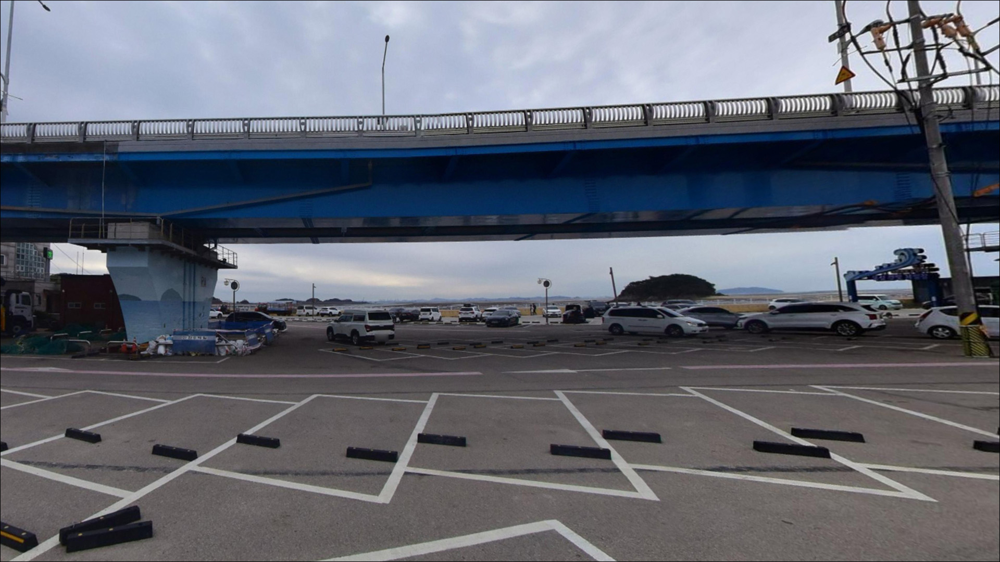
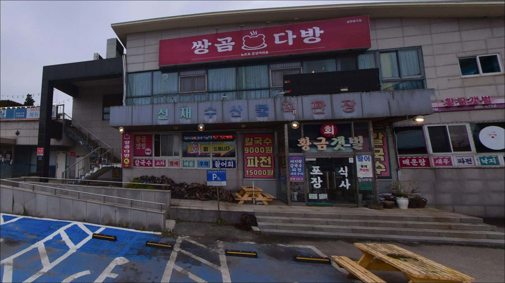
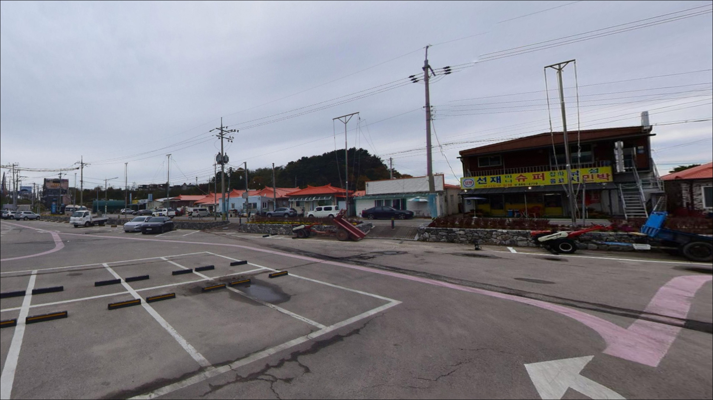
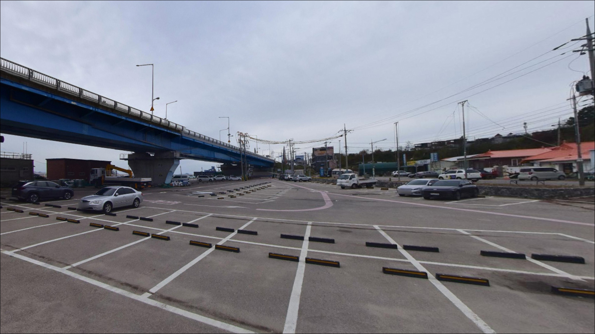

뱃말항 공영주차장, 영흥도 인천 옹진군 바다의 여운이 오래 남는 차박, 낚시 감성 포인트
이 페이지에는 광고(제휴 링크 포함)가 있으며, 광고 링크를 통해 구매하면 운영자가 판매 수익 또는 수수료를 받을 수 있습니다. 포인트 사진: 카카오맵 스카이뷰·로드뷰. 이 페이지의 지도·사진 이미지는 카카오맵의 실제 서비스 이미지와 다를 수 있습니다.


포인트 안내
뱃말항 공영주차장
인천 옹진군 영흥면 선재리 108-47
뱃말항은 2024년 낚시 통제구역으로 지정되어,
항 내부와 선착장 구조물 위에서 낚시를 하면
과태료 20만 원 부과 대상이 됩니다.
낚시 포인트로 알고 찾아갔다가
자리 하나 잡지 못하고 돌아오는 상황이
생기는 구조입니다.
이 글은 뱃말항 공영주차장을 거점으로 삼아
선재도 인근에서 실제로 낚시가 가능한 자리와
진입 동선, 물때 판단 기준을 정리합니다.
조황 단정이나 특정 어종 보장은
이 글의 범위에 포함되지 않습니다.

1. 선재대교에서 뱃말항까지 — 진입 동선과 주차 구조
뱃말항 공영주차장은 선재대교를 건넌 뒤
선재도 북측 마을 방향으로 진입하는 구조입니다.
선재리 중심부와 가까워 포장도로로 접근이 가능하고,
마을 내부 도로에서 이어지는 구간이라
초행이라도 내비 안내를 따르면 무난한 편입니다.
주차장은 75면 규모로 조성되어 있어
SUV나 캠핑 장비를 실은 차량도
진입과 회차에 큰 어려움이 없는 편입니다.
무인 요금 정산기가 설치되어 있으며,
운영 방식은 방문 시점에 따라 변동될 수 있어
현장에서 직접 확인하는 것이 안전합니다.
내비 검색 시 네이버지도와 카카오맵에서
명칭이 다르게 표기되는 경우가 있습니다.
'영흥수협 선재지점주차장'과 '뱃말항 공영주차장'
두 이름을 모두 입력해 보는 편이
검색 실패를 줄이는 방법입니다.

2. 차박 여건 — 주차장 체류 조건과 야간 환경
뱃말항 공영주차장은 마을과 인접해 있어
야간에도 차량 통행이 완전히 끊기지 않는 구조입니다.
가로등이 일부 존재할 가능성이 있고
민가와의 거리도 가까운 편이라
프라이버시를 기대하기 어려운 환경입니다.
공영주차장 특성상 장시간 점유나
취사·불피는 민원과 단속 대상이 될 수 있습니다.
낚시 이동 전 준비 공간이나
짧은 휴식 거점으로는 적합하지만,
차박을 메인으로 삼으려는 계획이라면
인근 대안 거점을 먼저 검토하는 편이 안전합니다.
선재도 넛출선착장 일대는
마을과 거리가 있는 외곽 선착장으로
차박 여건이 다소 나을 가능성이 있습니다.
단, 현장 여건은 변동이 있을 수 있어
방문 전 최신 후기를 별도로 확인하는 것이
기본 준비입니다.


3. 주변 편의시설 및 인프라 현황
뱃말항 공영주차장에는 화장실이 설치되어 있습니다.
선재도는 선재대교로 육지와 연결된 섬이지만,
소규모 어촌 마을 특성상
편의점이나 마트급 시설을 현장에서 기대하기는 어렵습니다.
선재리 일대에 소규모 식당과 매점이
분포해 있을 가능성은 있습니다.
출조 전 미끼·얼음·편의용품은
선재대교를 건너기 전
대부도 또는 안산 시내에서
미리 충분히 준비하는 편이 현실적입니다.
낚시 소품이 부족할 경우에 대비해
여분 채비도 넉넉하게 챙기는 것이 기본입니다.
반경 10km권으로 이동하면
영흥도 방향으로 넘어가
영흥수협 수산물직판장 일대에서
기본 생활 인프라를 이용할 수 있는 편입니다.
긴급하게 소품이 필요할 때
이 동선을 활용하는 것이 효율적입니다.

4. 방문 전 반드시 챙겨야 할 준비사항
선재도 출조에서 가장 먼저 확인할 것은
물때입니다.
서해 특성상 조수간만 차가 크기 때문에
간조 시간대에는 선착장·방파제 인근 수심이
급격히 낮아져 입질 자체가 사라지는 경우가 있습니다.
바다타임에서 선재도 기준 물때를 확인하고
만조 전후 2시간 내로 진입 시각을 맞추는 것이
기본 전략입니다.
서해 갯벌 지형은 조류가 들어오는 속도가 빠릅니다.
공영주차장 외 갯벌이나 저지대에
차량을 세우는 상황은 피해야 하며,
선재도에서 갯벌 진입 중 차량 침수 사고가
발생한 사례가 있습니다.
공영주차장 이외 구간 차량 진입은 자제하는 것이
안전의 기본입니다.
서해안은 안개가 잦고 계절풍 영향을 받는 지역이라
당일 기상청 해상예보를 한 번 더 확인하는 것이
불필요한 포인트 낭비를 막는 조건입니다.
야간 낚시를 계획한다면
구명조끼와 헤드랜턴은 필수 장비이며,
마을 선착장 구조물 위에서는 어선 이동 동선을
반드시 확인한 뒤 자리를 잡아야 합니다.

5. 낚시 여건이 달라지는 조건 — 지형 기반 분석
선재도 선착장과 방파제는
국립해양조사원 낚시정보도에 공식 포인트로 등재된 곳입니다.
뱃말항 자체 낚시가 제한된 만큼,
공영주차장에서 도보로 이동 가능한
선재도 방파제 외항 쪽이 주요 낚시 자리가 됩니다.
내항은 어선 계류 공간이 대부분이라
낚시 공간이 제한될 가능성이 있습니다.
서해 도보 포인트 특성상
수심은 얕은 편일 가능성이 높고,
조류 흐름은 만조와 간조 사이에
빠르게 바뀌는 구조입니다.
만조 전후 2시간이 입질이 살아나는 타이밍으로
기대해 볼 수 있는 시간대이며,
정조 이후에는 봉돌 무게를 올리는 조정이
채비 컨트롤에 유리합니다.
당너머해변 방향으로 이동하면
갯벌과 연결된 해안 구간에서
원투 방식을 시도해 볼 수 있는 지형이 나옵니다.
선재도 주변 불섬, 뚱우리 갯바위 등
보조 공략 가능한 지점도 분포해 있어
이동 범위를 넓히는 방식으로 운용하는 것이
서해 도보 출조에서 현실적인 접근입니다.
최신 조황은 출조 전에 반드시
별도로 검색해 보시기 바랍니다.


6. 선재도 지형에 어울리는 낚시 스타일 제안
원투낚시는 선재도 주변에서
가장 폭넓게 시도해 볼 수 있는 방식입니다.
붕장어·도다리·망둥어는
갯벌과 연결된 바닥층을 노리는 어종으로,
만조 전후 봉돌을 멀리 보내
바닥을 천천히 탐색하는 전략이 기본입니다.
야간 원투낚시에서는 붕장어 입질을
기대해 볼 수 있는 지형 조건을 갖추고 있습니다.
루어낚시도 시도해 볼 만한 방식입니다.
우럭과 노래미는 방파제 외항 방향 바닥층에서
지그헤드 웜 리그로 공략하는 방식이 어울립니다.
농어는 항 입구 수로 구간에서
미노우나 루어 방식으로
조류가 살아 있는 만조 전 타이밍에 접근하는 편이
현실적인 선택입니다.
가을 시즌에는 주꾸미 에깅이
서해 권역 도보 낚시의 대표 스타일로 자리 잡고 있습니다.
선재도 인근 갯벌형 해안은
주꾸미가 이동하는 구간과 겹칠 가능성이 있어,
9월~10월 조금 전후 타이밍에
에기를 바닥층에서 천천히 끌어오는 방식이
이 지형에 어울립니다.
계절별로 보면 봄에는 넙치·도다리·숭어,
여름~가을에는 농어·망둥어·우럭·붕장어,
겨울에는 노래미·숭어 정도로 기대 어종이
좁아지는 경향이 있습니다.
이 구간은 국립해양조사원 낚시정보도 기준
영흥면 공통 어종 패턴을 따르는 편입니다.

7. 대안 포인트와 플랜 B 동선
선재도에서 낚시 여건이 여의치 않을 때
가장 먼저 이동할 곳은
영흥도 진두항 방파제입니다.
영흥대교를 건너면 바로 도달할 수 있는 거리이며,
수심 4~5m 수준의 방파제 구조로
감성돔·쭈꾸미·워킹 루어낚시 포인트로
영흥면 권역에서 가장 알려진 곳 중 하나입니다.
선재도 내에서 이동 범위를 유지하려면
대량곶 부근 갯바위와
영흥대교 선착장 방향을 탐색해볼 수 있습니다.
두 자리 모두 국립해양조사원 낚시정보도에
등재된 지점으로,
선재도 선착장과 같은 권역의 갯바위 구간입니다.
대부도 방아머리 선착장은
선재대교를 건너 3km 수준으로 이동하면 닿는 지점으로,
영흥도·선재도·대부도·구봉도 낚시 권역에 포함됩니다.
차박을 겸한 당일 탐색 동선에서
플랜 B로 연결하기 좋은 거리입니다.

낚시 통제 범위와 물때,
두 가지를 확인하고 가면
선재도가 달라 보입니다
원투낚시나 루어·에깅을 즐기는 낚시인이라면
선재도는 충분히 찾아갈 만한 서해 도보 포인트입니다.
국립해양조사원 낚시정보도에 등재된 만큼
기본 지형 조건은 갖추고 있고,
영흥도·대부도 권역과 연계해 이동 범위를 넓히면
하루 동선으로도 다양한 자리를 돌아볼 수 있습니다.
반면 뱃말항 낚시 통제구역 범위를 모르고 진입하거나,
물때 계산 없이 간조 타이밍에 도착하면
낚시 자체가 의미 없어지는 상황이 됩니다.
통제 범위 파악, 물때 확인, 자급 준비,
이 세 가지를 갖추고 가면
서해 특유의 조류 흐름을 활용한 낚시를
제대로 즐길 수 있는 곳입니다.
차박 여행자라면 뱃말항 공영주차장은
낚시 이동 전 거점으로 활용하는 데 적합하고,
하룻밤 머물 자리는 넛출선착장이나
장경리해수욕장 방향을 따로 물색하는 편이 현실적입니다.
물때와 통제 범위를 읽고 낚시와 차박을 함께 엮는 서해 출조,
준비를 갖출수록 아까운 포인트가 되지 않습니다.